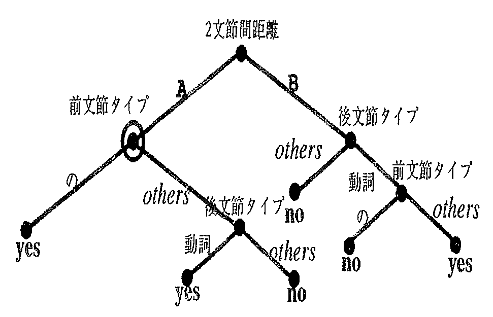
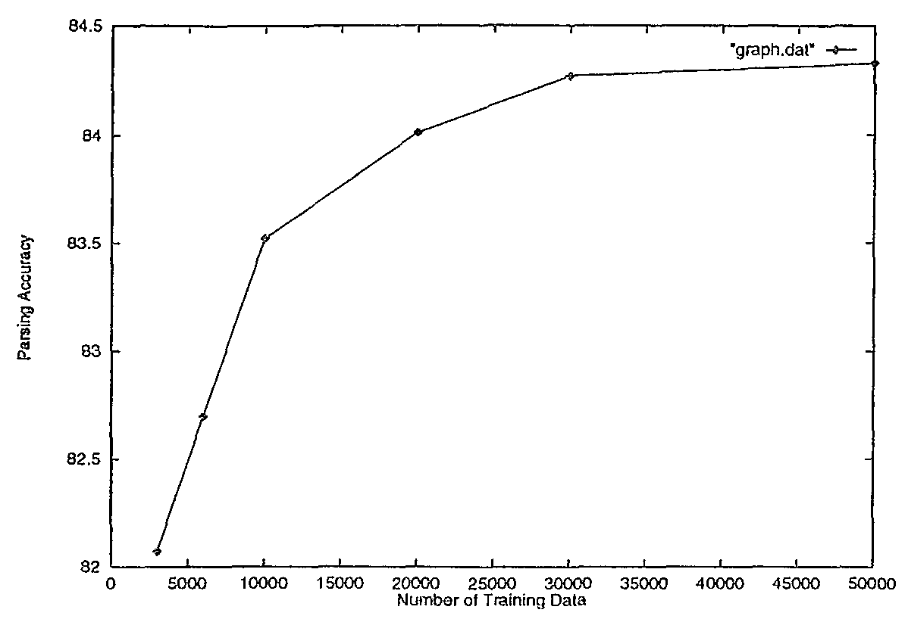

本稿ではコーパスから決定木を構成し日本語係受け解析に適用する手法を提案する. 一般に日本語係受け解析では2文節間の係りやすさを数値で表現し, その数値を1文全体で最適化することによって係受け関係を決定する. したがって, 日本語係受け解析の問題は2文節間の係りやすさを正確に計算することに帰着される. 提案手法の主旨は 2文節の係りやすさの評価と必要な属性の自動選択に決定木を利用するということである. 既存の統計的依存解析の研究では, 文節の種類によらず, あらかじめ決められた属性すべてによる条件付き確率で係りやすさを評価する. 一方, 決定木による手法では, 係受け関係にある文節とそうでない文節を弁別する属性が, 2文節の種類に応じて重要な順に必要な数だけ選択される. したがって, 大量の属性をシステムに与えても必要がなければ利用されず, データスパースネスの問題を避けることが可能となる. これによって構文解析の精度向上に効果が期待される属性はすべて採用することができる. EDRコーパスを用いて手案手法の評価実験を行ったところ, 既存の統計的係受け解析手法を4%上回る解析精度が得られた. さらに本実験では, 1.決定木の枝刈りと解析精度の関係, 2.データ量と解析精度の関係, 3.種々の属性の解析精度に与える影響, 4.文節の主辞に関して頻出単語の表層, 分類語彙表カテゴリを属性に加えた場合の影響, の各項目について検討を行った. その結果, 1.少なめの枝刈りで解析精度が向上する, 2.係受け解析の学習に必要な文数はおよそ5万文である, 3.属性のうち特に有効なのは, 係り側文節の形と文節間距離である, 4.主辞の語彙情報を使っても必ずしも解析精度が上がるわけではない, の4点が明らかとなった. これらの結果は今後日本語係受け解析システムや日本語解析済みコーパスを構築する際に 一定の指針となりうる.
This paper describes a Japanese dependency parser that uses a decision tree. Japanese dependency parser generally prepares a modification matrix, each value of which represents how a phrase tends to modify the other. The parser determines the best dependency structure by totally optimizing the values in a sentence under several constraints. Therefore, our main task is to precisely evaluate the modification matrix from corpora. Conventional stochastic dependency parsers define a set of learning features and apply all of them regardless of phrase types. On the contrary, our decision tree based method automatically selects significant and enough number of features according to the phrase types. We can make use of large number of features that may have contribution to parsing accuracy. The proposed method was tested with EDR corpus and yielded significantly better (4%) performance over a conventional statistical dependency parser. In addition, we tested the following 4 properties of the system; 1. relation between parsing accuracy and pruning of decision tree, 2. relation between parsing accuracy and amount of training data, 3. relation between types of features and parsing accuracy and 4. parsing accuracy when additionally using frequent open class words and thesaurus categories. The results were 1. weak pruning yielded better performance, 2. the decision tree learning for dependency parsing required fifty thousands Japanese sentences, 3. the type of modifier and the modification distance are particularly effective for parsing accuracy and 4. open class words and thesaurus categories do not always improve the accuracy. These findings may offer the important clues to Japanese parser developments and corpus constructions in the future.
| 1. はじめに | |
| 2. 統計的係受け解析と決定木の利用 | |
| 2.1 統計的係受け解析モデル | |
| 2.2 学習に利用する属性 | |
| 2.3 決定木の構成と技刈り | |
| 3. 実験と考察 | |
| 3.1 枝刈りと解析精度 | |
| 3.2 訓練データ数と解析精度 | |
| 3.3 種々の属性の影響 | |
| 3.4 頻出単語の表層, 分類語彙表カテゴリの利用 | |
| 4. 関連研究 | |
| 5. 結論 | |
| 参考文献 |
日本語の実用システムにおける構文解析では, 従来から依存文法の考え方に基づく係受け解析を採用することが多い. これは主に, 日本語の文節順序が化較的自由であろこと, 文節という単位ごとに情報を集約し文節間の係受け関係を決定することにより 無駄な曖味性を減らせることの2つの理由による. 一般に係受け解析では2文節間の係りやすさを数値で表現した係受け行列を用意し, 動的計画法を用いて1文全体で最適化を行い文の係受け関係を決定する. したがって, 係受け解析の本質的問題はどのように係受け行列を構成するかに帰着される. これまで多くの研究者によって係受け行列を高度化する手法が提案されてきた. 文献1), 2)は 南3)によって提案された 従属節の階層性を係受け行列の中に取り込み, 文献4)は 日本語長文の並列句に現れる文節列の類似性に着目し係受け行列に制約を加えた. 文献5)ではさらに字種, 読点や副詞性単語の有無などを考慮している.
これら既存の研究では係受けの優先度(すなわち係受け行列の値)は 人手によって設定されることが多かった. 係受け解析で使われる属性数は膨大でそれらが互いに競合することも多いため, その優先度を人手で決定するのは非常に困難な作業である. 優先度が解析するテキストの種類に依存すると教えられるため, 構文解析の適用範囲を変更しようとすると優先度の保守管理も非常に煩雑となる. また, 既存手法の評価が数十から数百という少数の文を用いて行われてきたため, その一般的な効果を評価することは困難であるという問題点もあった.
本稿ではコーパスから決定木を構成し日本語係受け解析を行う手法を提案する. 具体的には2文節の係りやすさの評価と必要な属性の選択に決定木を利用する. これまでに行われた 統計的依存解析の研究6),7)では, 文節の種類によらずあらかじめ決められた属性による条件付き確率で係りやすさを評価している. そのため有限のデータから計算する条件付き確率が正確であるためには, 利用する属性数は少数にならざるをえなかった(データスパースネスの問題). 決定木を利用する手法では, 係受け関係にある文節とそうでない文節を弁別する属性が, 2文節の種類や周囲の環境に応じて重要な順に, しかも必要な数だけ選択される. そのため大量の属性をシステムに与えても必要がなければ利用されず, データスパースネスの問題を避けることできる. これは従来研究で解析精度向上に有効であることが知られている知見をシステムに取り込み, テストする際に非常に有効な特長となる.
EDRコーパス8)を用いて提案手法の評価実験を行った. 訓練事例とテス ト事例を明確に区別し, テスト文数も言語現象の偏りを避けるため1万文とした. このような評価法を用いることで 様々な属性が解析精度全般に与える影響をある程度客観的に知ることが可能となった.
本稿の構成は以下のとおりである. 2章で決定木を用いた係受け解析の統計モデルについて述べる. 初めに統計的係受け解析のモデルを説明した後, 実際のシステムで利用する属性を導入する. 続いてこれらの属性を用いた決定木学習により係受け確率の計算を行う方法について述べる. 3章ではEDRコーパスを用いた様々な評価実験の結果について報告する. 4章で本研究と他の統計的構文解析法について比較を行い, 最後に5章で本稿をまとめる.
日本語の実用システムにおける構文解析では, 従来から文節の係受け関係に基づく係受け解析を採用することが多い. これは主に, 日本語の文節順序が比較的自由であること, 係受け解析が文節という単位ごとに情報を集約するので, 無駄な曖味性を減らし頑堅なシステムを構築できることの2つの理由による. 一般に係受け解析システムは以下の3つのステップから構成される.
| (1) | 入力文を形態素解析した後, 文節の列に分解する |
| (2) | 2文節間の係りやすさを数値で表現した (本稿では確率で表現される)係受け行列を用意する |
| (3) | 動的計面法を用いて1文全体で最適化することで文の係受け関係を決定する |
各ステップを次の例に基づいて説明する.
例: 昨日の夕方に近所の子供がワインを飲んだ
第1のステップで表1の係受け行列中に示す文節列が生成される. 2番目のステップでは係受け行列における各文節間の係受け確率を計算する. たとえば, 表1により最初の文節(昨日-の)は2番目の文節‘夕方-に’に確率0.70, 3番目の文節‘近所-の’に確率0.07で係ることが示される. 最後に3番目のステップは動的計画法により係受け行列から 1文全体の係受け構造Dbest を決定する. 上記の例に対しては図1に示す解が得られる.
| 昨日-の | |||||
| 夕方-に | 0.70 | 夕方-に | |||
| 近所-の | 0.07 | 0.10 | 近所-の | ||
| 子供-が | 0.10 | 0.10 | 0.70 | 子供-が | |
| ワイン-を | 0.10 | 0.10 | 0.20 | 0.05 | ワイン-を |
| 飲む-た | 0.03 | 0.70 | 0.10 | 0.95 | 1.00 |
| |||||||||||||||||||||||||||||||||||||||||||||||||||||||||||||||||||||||||||||||||||||||||||||||||||||||||||||||||||||||||||||||||||||
以上で述べた操作を確率モデルとして記述する. 入力文を S とし, S が m 個の文節集合 B ( {b1,・・・, bm } ) に分けられるとする. ただし, bi は i 番目の文節である. ここで文全体の係受け集合 D を, D ＝ {mod (1),・・・, mod (m -1) } とする. mod (i ) は i 番目の文節が係る文節の番号を示している. たとえば図1の係受け構造では D ＝ {2,6,4,6,6} となっている. これ以降 D は以下の条件を満たすものと仮定する☆.
統計的係受け解析は, 1文に訓練データの観点から見て 最も確率が高い係受け集合 Dbest を割り当てる過程である. 係受け集合は文節集合から決定されるので, 統計的係受け解析の手続きは次のような尢度を最大化することに相当する.
| Dbest ＝ argmaxD P (D |S ) ＝ argmaxD P (D |B ) |
各係受けが上記2つの条件を満たし, 他の係受けと独 立であると仮定すると P (D |B ) は
| P (D |B ) ＝ | m | P (yes |bi , bj , fij ) | (1) | ||
| Π | |||||
| i ＝1 |
本節では2文節(前文節 bi と後文節 bj )の係受け確率を 決定するために用いる属性(前節の fij とそのとりうる値)について説明する. 表2は用いる属性の種類をまとめたもので, 表3に 各属性値のとりうる値☆☆を示す. 属性1から属性5は前文節と後文節の両者が持つ属性である. それに対して属性6から属性8は主に2文節の間に存在する言語的手がかりに関連する属性である. 今回は決定木を利用した係受け解析の基本性能を評価する目的で, 比較的単純な構文的属性のみを用いた. 例外的なのは属性番号1の主辞の語彙情報であり, 類出単語の表層と分類語彙表11)のカテゴリを利用した. これらの属性の解析精度への影響については次章で詳しく述べる.
| 番号 | 2文節 | 番号 | その他 |
| 1 | 主辞の語彙情報 | 6 | 2文節間距離 |
| 2 | 主辞の形態素 | 7 | 2文節間の助詞‘は’ |
| 3 | 文節のクイプ | 8 | 2文節間の読点 |
| 4 | 句読点 | ||
| 5 | 括孤 |
| 各属性のとりうる値 | |
| 2 | サ変名詞, 感動詞, 記号, 形式名詞, 形容詞, 固有名詞, 時制相副詞, 時相名詞, 人名, 数詞, 接続詞, 地名, 陳述副詞, 程度副詞, 動詞, 動詞性接尾辞, 発言副詞, 評価副詞, 頻度副詞, 普通名詞, 副詞, 副詞形態指示詞, 副詞的名詞, 名詞形態指示詞, 名詞性名詞助数辞, 名詞性名詞接尾辞, 名詞接続助詞, 名詞接頭辞, 様態副詞, 量副詞, 連体詞, 形態指示詞 |
| 3 | きり, くらい, けど, けれど, けれども, こそ. こと, さ, さえ, し, しか, じゃ, すなわち, すら, て, で, でも, ぜ, そして, それに, ぞ, ため, たけ, だって, だの, っけ, ったら, って, つつ, と, とか, とも, ども, な, なあ, ない, ないし, ないしは, ながら, など, なら, ならびに, なり, なんか, なんて, に, ね, の, のみ, は, ばかり, ヘ, ほど, また, または, まで, も, もしくは, もの, ものの, や, やら, よ, よう, より, る, わ, を, サ変名詞, 意志, 括弧開, 感動詞, 基本, 記号, 及び, 共, 形式名詞, 形容詞, 形容詞性述語接尾辞, 固有名詞, 語幹, 時制相副詞, 時相名詞, 条件, 人名, 推量, 数詞, 接続詞, 地名, 中, 陳述副詞, 程度制詞, 動詞, 発言副詞, 評価副詞, 頻度副詞, 普通名詞, 副詞, 形態指示詞, 副詞的名詞, 並びに, 又は, 未然, 名詞形態指示詞, 名詞性述語接尾辞, 名詞性名詞助数辞, 名詞性名詞接尾辞, 命令, 様態副詞, 量副詞, 連体, 連体詞, 連体詞, 形態指示詞, 連用 |
| 4 | non, 読点, 句点 |
| 5 | non, ‘, （, “, 「, 『, 【, ＜, [ |
| 6 | A (前文節番号と後文節番号の差が1), D (前文節番号と後文節番号の差が2〜5), C (前文節香号と後文節番号の差が6 以上) |
| 7 | 0,1 (2 文節間の副助詞「は」の有無 0:無 1:有) |
| 8 | 0,1 (2 文節間の読点の有無 0:無 1:有) |
決定木を利用した係受け解析法では文内の2文節(前文節と後文節)に関する言語情報を属性とし, その2文節が係受け関係にあるかどうかをクラスとして事例データを作成する. 表4には前節で定義された属性を用いて 2.1節で用いた例文から作成した事例データを示す. 表4から分かるように決定木作成用のデータは1文内のあらゆる2文節の組合せから構成され, その2文節が係受け関係にあったかどうかでクラス付与が行われる. データは文内の任意の2文節の組合せで構成されるが, 我々が利用するC4.512)の決定木学習アルゴリズムは 基本的に事例数の線形オーダの時間しか要しないので, 3章で述べるように学習は効率的な時間で終了する.
| 前文節 | 後文節 | その他 | クラス | ||||||||||
| 1 | 2 | 3 | 4 | 5 | 1 | 2 | 3 | 4 | 5 | 6 | 7 | 8 | |
| 昨日 | 時相名詞 | の | no | no | 夕方 | 普通名詞 | に | no | no | A | no | no | yes |
| 昨日 | 時相名詞 | の | no | no | 近所 | 普通名詞 | の | no | no | B | no | no | no |
| 昨日 | 時相名詞 | の | no | no | 子供 | 普通名詞 | が | no | no | B | no | no | no |
| 昨日 | 時相名詞 | の | no | no | ワイン | 普通名詞 | を | no | no | B | no | no | no |
| 昨日 | 時相名詞 | の | no | no | 飲む | 動詞 | 動詞 | no | no | B | no | no | no |
| 夕方 | 普通名詞 | に | no | no | 近所 | 普通名詞 | の | no | no | A | no | no | no |
| 夕方 | 普通名詞 | に | no | no | 子供 | 普通名詞 | が | no | no | B | no | no | no |
| 夕方 | 普通名詞 | に | no | no | ワイン | 普通名詞 | を | no | no | B | no | no | no |
| 夕方 | 普通名詞 | に | no | no | 飲む | 動詞 | 動詞 | no | no | B | no | no | yes |
| 近所 | 普通名詞 | の | no | no | 子供 | 普通名詞 | が | no | no | A | no | no | yes |
| 近所 | 普通名詞 | の | no | no | ワイン | 普通名詞 | を | no | no | B | no | no | no |
| 近所 | 普通名詞 | の | no | no | 飲む | 動詞 | 動詞 | no | no | B | no | no | no |
| 子供 | 普通名詞 | が | no | no | ワイン | 普通名詞 | を | no | no | A | no | no | no |
| 子供 | 普通名詞 | が | no | no | 飲む | 動詞 | 動詞 | no | no | B | no | no | yes |
| ワイン | 普通名詞 | を | no | no | 飲む | 動詞 | 動詞 | no | no | A | no | no | yes |
次に決定木の学習について説明する. 決定木の構成, 枝刈りには汎用の決定木学習プログラムC4.5を利用した. C4.5はデータに対して決定的に1つのクラスを出力するのに対して, 我々が係受け解析で利用したいのはデータがあるクラスに属する確率である. そのためC4.5が構成した決定木から各クラスの頻度分布を取り出し, データが各クラスに属する確率を計算するモジュールのみ追加した. 以下では表4の例に基づいて手案手法, 実験結果を理解するのに必要な程度でC4.5のアルゴリズムを説明する. 詳細に興味のある読者は文献12), 13)を参照されたい.
決定木アルゴリズムは 情報理論的なヒューリスティックス☆を 最大にする属性の再帰的選択によって, 木構造を持つクラス弁別規則を生成する. 獲得された決定木は事例の分類や回帰分析などに広く利用されている. 図2に表4の例から生成した決定木を簡単化したものを示す. 決定木の各節点はその節点に付与された属性によるテストを行い, その値(各節点から出る枝に付与されている)に応じて再帰的に事例を分割する. また, 決定木の葉節点にはその節点に割り振られた事例が属するクラスが指定される. 図2の決定木では初めに2文節間距離によるテストが行われる. その値が‘A’であれば木を1段たどり, 前文節のタイプによってテストを行う. その値が‘の’であればデータのクラスはyesであると判定される.
|
 |
C4.5では再帰的にヒューリスティック関数gain_ratio (X )を最大にする属性 X をテストとしてデータを完全に弁別できる決定木を構成する. 続いて訓練に用いたデータ以外への汎化性能を向上させるために技刈りを行う. 属性の選択に用いる gain_ratio (X ) の意味は以下のとおりである.
S をある事例の集合, Ci を1つのクラスとし freq(Ci ,S ) を S のうち Ci に属する事例の個数とする. また, |S | はS に属する事例数, k , m は各々クラス数, 節点の分岐数であるとする.
S から事例を1つ選びそのクラスが Cj であるとするとその確率は
| freq (Cj ,S ) | |
| ------------------ | |
| |S | |
であるから, この事実が持つ情報量は
| -log 2 | freq (Cj ,S ) | bits | ||
| ------------------ | ||||
| |S | |
で, S の全事例について期待値をとれば
| info (S ) ＝ | ||||||
| - | k | freq( Cj ,S ) | × log2 | freq( Cj ,S ) | bits | |
| Σ | ||||||
| ----------------- | ----------------- | |||||
| |S | | |S | | |||||
| j =1 | ||||||
となる. 訓練データの集合 T に対して info (T ) の値は T の中の1つの事例のクラスを決定するために必要な平均情報量を示している. 同様に, ある属性 X で集合 T を分割したときの平均情報量 infoX(T ) を以下に定義する.
| infoX(T ) ＝ | m | |Ti | | ×info (Ti ) | |
| Σ | ||||
| -------- | ||||
| |T | | ||||
| i =1 |
属性 X で事例を分割することに意味が有るのは 分割後にクラスの予測が容易になる場合(分割されたデータのクラスが片寄る)であるから, 属性 X による分割の評価基準の候補として info (T ) とinfoX(T ) の差 gain (X ) を考えうる.
| gain (X ) ＝ info (T ) - infoX (T ) |
ところが実際に gain (X ) を評価基準として利用すると 分割数の多い属性にバイアスが掛かるため, 以下のsplit_info (X ) で正規化した gain_ratio (X ) を導入する.
| split_info (X ) ＝ - | m | |Ti | | × log 2 | |Ti | | |
| Σ | |||||
| -------- | -------- | ||||
| |T | | |T | | ||||
| i ＝1 |
| gain_ratio (X ) ＝ | gain (X ) | |
| ------------------- | ||
| split_info (X ) |
gain-rafio (X ) を用いて構成した決定木は訓練事例は 完全に弁別するが過適応の可能性があり, 未知データに対する分類能力は必ずしも高くない. そこでC4.5では統計的検定の考えに基づいて決定木の枝刈りを行う. 信頼レベル0%から100%で枝刈りの強さを指定し, 値が小さいほど技刈りを強く行うことを意味する.
以上で見てきたように決定木の節点にはデータが分配されており, 各クラスの出現頻度が保存されている. したがって, 決定木の任意の節点においてクラスの分布確率を計算できる. たとえば図2の決定木で〇を付けた節点は文節間距離がA である5つの事例が分配されている. この節点においてクラスがyes, noである確率は各々3/5, 2/5 と計算できる(表4参照). まったく同様にして文内の2つの文節 bi と bj , 属性情報 fij が与えられると, 枝刈り後の決定木を葉節点までたどることで2文節が係受け関係にある確率 PDT (yes | bi , bj , fij) を計算できる. この確率 PDT (yes | bi , bj , fij) から式(1)の係受け確率を計算するために以下の式(2)を用いる. 式(2)は文献6)が用いたのと同種のヒューリスティックスで文節 bi の可能なすべての係り先に関して決定木から得られる確率を正規化している.
| P(yes | bi , bj , fij) 〜 | ||
| PDT (yes | bi , bj , fij) | (2) | |
| ------------------------------------------- | ||
| Σm k > i PDT (yes | bi ,bk , fik ) |
もちろん式(2)の PDT (yes | bi , bj , fij) の代わりに 決定木中の頻度分布を直接用いて係受け確率を計算することも可能である. その場合と比較して式(2)は遠い係受けを重視する傾向がある. 式(2)の値を係受け行列の値として 全体を最適化する14)ことで文全体の係受け構造を決定できる.
提案手法の定量的評価を行うため, EDRコーパス8)を用いて 以下の4項目の実験を行った. 以下の各節でそれぞれの結果について述べる.
本研究で係受け解析の精度とは係受け解析システムが付けた係受け中で, EDRコーパスでも係受け関係が付与されたものの割合を示す. 訓練データ, テストデータは以下の方法で作成した.
| (1) | EDRコーパスから文を抽出し形態素解析10)を 行った後, 文節に分解した. |
| (2) | 1の出力から2文節ずつの組合せを作成し, これをEDRコーパスの係受け可否の情報(ブラケット情報のみ)と比較する. この際文節定義の違いにより EDRの係受けとの対応を完全にとることができない文節が生じる. そのような組合せを含む文のデータは採用しない (その文から作られる2文節の組合せのうち 1つでも不整合なものがあるときは文全体のデータを採用しない). |
| (3) | 2で残ったコーパス(総文数207,802, 総文節数1,790,920)を20個のファイルに分ける (1個のファイルが約1万文強). 訓練データは文数に応じて, 各ファイルの先頭から同じ文数ずつ取り出し作成した. テストデータ(1万文)は, 訓練データとの重なりがないように, 20に分けた各ファイルの2,501文目から500文ずつ取り出して作成した. |
実験結果の詳細に移る前にC4.5による決定木構成の効率について簡単に触れておく. 5万文の訓練データから決定木を構成するのに必要な時間はSun SPARC Ultra2を用いて 15分程度であり実用上まったく問題がない時間であった.
表5に決定木を様々な信頼レベルで枝刈りした際の解析精度を示す. 使用した訓練データ数は1万文である☆.
| 信頼レベル | 25% | 50% | 75% | 95% |
| 解析精度 | 82.01% | 83.43% | 83.52% | 83.35% |
2.3節で述べたように, 信頼レベルの値が小さいほど, 強い枝刈りを意味する. 通常の機械学習の問題には25%程度が適当であることが 実験的に示されている12). したがって, 決定木を係受け解析に利用する場合の枝刈りは 通常より少なめに行うのが良いということになる. この結果から以下に述べる実験ではすべて信頼レベル75%を使用した.
枝刈りは小数のデータしか持たない情報をノイズであると考えて捨てることに相当する. 一方, 係受け解析を含む自然言語処理には 一般的規則で記述するのが困難な例外的な表現が頻繁にともなう. 係受け解析において枝刈りを少なめにすると精度が向上するのは, 少数の事例しか持たない情報もノイズではなく, 係受け関係の決定に有益な情報を含んでいるためであると考えられる. Harunoら15)は形態素解析において 少数の事例が持つ例外情報の重要性に着目し, 誤り駆動で複数の確率モデル作成し 予測の際に混合する手法で解析精度が向上することを報告している. 本節の実験結果を考慮すると, 係受け解析に関しても同様の手法を適用することで 解析精度が向上する可能性がある16).
表6に様々な数の訓練データから決定木を作成し, 1万文のテストデータで評価した解析精度を示す. 図3は訓練データ数と解析精度の関係を分かりやすくするため, 同じデータを学習曲線の形に書き改めたものである. 図から訓練データ数が2万文程度までは急激に解析精度が向上し, その後学習曲線の立ち上がりは鈍り始め, 3万文から5万文でかなりフラットに近くなる.
| 訓練データ数 | 3000文 | 6000文 | 10000文 | 20000文 | 30000文 | 50000文 |
| 解析精度 | 82.07% | 82.70% | 83.52% | 84.07% | 84.27% | 84.33% |
|
 |
学習曲線の様子をまとめると,
| (1) | 係受け解析の学習に必要な訓練データ数はおよそ5万文である |
| (2) | 解析精度は最高84.33%である |
一般に構文解析結果付きのコーパスの作成は非常にコストが掛かる作業である. 本節で得られた結果は少なくとも係受け解析の学習に関しては 5万文程度のコーパスがあれば十分であることを示しており, 今後のコーパス作成にある程度の指針を与える. もちろん, EDRコーパスは様々な分野のテキストから構成されているので, 対象分野を絞ったコーパスを利用し学習を行えば, より少ないデータ数で高い精度を達成することも可能となろう.
次に解析精度が収束する84.33%という数字について検討する. Penn Treebank17)を用いた最近の 統計的構文解析システム6),18)では, 我々と同種の情報を用いて86〜87%の解析精度が得られていること, 日本語文節の係り先は自分より後ろであり, 英語よりも予測が行いやすいことの2点を考慮すると, 現状の精度は一見低いように見えるかもしれない.
学習システムの評価はデータに大きく依存する. そこで1万文のテストデータを訓練データとしても使い解析精度を評価したところ, 解析精度は88.85%にとどまった. この解析精度が低い原因として, 使用した属性の不備以外にも, EDRコーパスとPenn Treebankの内容の違いが考えられる. EDRコーパスが様々なテキストから引用されているのに対して, Penn Treebankは Wall Street Journalの記事のみから構成されており一様性が高いという特徴を持つ. またデータの揺れによって精度が落ちる可能性も考えられる. この可能性は同じくEDRコーパスにCollins6)と 同様の手法を適用した藤尾ら7)のシステムの解析精度が 80.48%であることからも推測されるが, 定量的評価は今後の課題である.
次に, EDRコーパスと英語の構文解析に利用される Penn Treebank17)が含む タグ情報の違いにも注意する必要がある. Penn Treebankは詳細な形態素, 構文情報を含んでおり, 英語における研究では品詞タガーも同じPenn Treebankから学習したものを利用している. 加えてパーザを学習する際にもコーパスに含まれる構文情報を利用している. これに対してEDRコーパスの品詞タグは構文解析の曖味性を解消するには十分でないため, 我々の研究では形態素解析にChasen10)を利用した. このように我々の研究ではEDRコーパスに含まれるブラケット情報のみを利用し, 形態素解析や文節への分解などは(コーパスと関係のない)他のプログラムを使用していることも 解析精度を低くする原因となっているであろう.
今後はどのような属性が係受け解析に有効であるかを見きわめると同時に, 5万文から10万文の構文解析結果付きコーパスをいかに揺れを少なく 豊富な情報を含めて構築できるかが重要なテーマとなるであろう.
表7に1万文の訓練データに対する各々の属性の解析精度への影響を示した. 具体的には個々の属性を利用しない場合にどの程度解析精度が低下するかを表している.
| 属性内容 | 解析精度の低下 | 属性内容 | 解析精度の低下 |
| 前文節主辞品詞 | −0.07% | 後文節句読点の有無 | ＋1.62% |
| 前文節タイプ | ＋9.34% | 後文節括孤開の有無 | ±0.00% |
| 前文節句読点の有無 | ＋1.15% | 後文節括孤閉の有無 | ±0.00% |
| 前文節括弧開の有無 | ±0.00% | 文節間距離 | ＋5.21% |
| 前文節括弧閉の有無 | ±0.00% | 文節間読点の有無 | ＋0.01% |
| 後文節主辞品詞 | ＋2.13% | 文節間“は”の有無 | ＋1.79% |
| 前文節タイプ | ＋0.52% |
表7の結果から係受け解析に特に有効な属性は前文節のタイプと文節間距離であることが分かる. この2属性の組合せは直感的に理解すると ‘可能な範囲でできるだけ近い係り先を優先する’という 頻繁に用いらてきたヒューリスティックスを表すと考えてよい. ‘可能な範囲’や‘優先のさせかた’が統計を用いて柔軟に設定されるのが 学習に基づく手法の利点であるともいえる. この結果から, 今後より高い解析精度を達成するためには, 文節タイプと文節間の距離に関する詳細な情報が必要となる.
他の属性の多くはわずかずつ解析精度の向上に寄与している. 文字種などを含むこの種の属性数を増やすことも今後の重要な課題である. 括弧に関する情報が解析精度に寄与しなかった理由としては, EDRコーパスに括狐を含む表現が少ないことがあげられる. この属性の有効性については他のコーパスを利用した検証が必要である. また, 前文節主辞品詞が唯一解析精度を低下させている. これは前文節の文法的特性の大部分が前文節の文節タイプで決定されることに加えて, サ変名詞を動詞と解析する形態素解析の誤りが多く起きるためではないかと推測される.
本節では文節の主辞の語彙情報を属性として利用した場合の解析精度について述べる. 訓練データは1万文で, 利用した属性は以下の4種類である. 参考のため表8に分類語彙表における小数点以下1桁までの分類項目を示す. 表中の括弧内に示した数字は小数点以下2桁まで見たときの下位分類数である.
| 1 | 体の類 | 3 | 相の類 |
| 1.1 | 抽象的関係(10種類) | 3.1 | 抽象的関係(6種類) |
| 1.2 | 人間活動の主体(9種類) | 3.3 | 精神および行為(4種類) |
| 1.3 | 人間活動-精神および行為(9種類) | 3.5 | 自然現象(1種類) |
| 1.4 | 生産物および用具(8種類) | ||
| 1.5 | 自然物および自然現象(7種類) | ||
| 2 | 用の類 | 4 | その世(3種類) |
| 2.1 | 抽象的関係(3種類) | ||
| 2.3 | 精神および行為(6種類) | ||
| 2.5 | 自然現象(1種類) |
表9は各々の属性に対する解析精度を示す. 実験を行った設定ではすべての属性について 解析精度は主辞の語彙情報を利用しない場合(83.52%)に至らなかった. 特に頻出語と分類語彙表の両者で情報を多く使うほど精度が悪くなることは注目に値する. 詳細な原因を特定することは難しいが, 決定木の上位の段階でこれらの属性による事例分割が行われる傾向が見られる.
| 主辞の語彙情報 | 上位100語 | 上位200語 | 分類語彙表1桁 | 分類語彙表2桁 |
| 解析精度 | 83.34% | 82.68% | 82.51% | 81.67% |
ヨーロッパ語による研究では有効であることが知られている6), 18),19)語彙情報が なぜ我々の実験では有効に働かないのであろうか. ここでは頻出単語と分類語彙表のカテゴリに分けて考察を行う.
頻出語彙に関して第1に考えられる理由は100語とか200語の限られた数の語彙を 直接決定木の属性値として用いた点である. 藤尾ら7)はCollins6)の方法で あらゆる単語間の共起頻度を考慮に入れたモデルを構成している. その結果いくらかの解析精度の向上が見らたことから, 決定木を用いた手法においても単語間の共起確率をレベル分けし, 属性値として利用することで語彙情報を有効に利用できる可能性がある.
第2に日本語では助詞や助動詞など機能語の重要性がヨーロッパ語に比べて大きい点である. これらの語は他の属性(文節のタイプ)としてすでに使用されているので 最も重要な語彙情報はすでに使われていると考えることもできる.
第3に使用したコーパスの違いである. 英語で使用される Penn TreebankはWall Street Journalの記事のみから構成されるため, 同じような単語が頻出すると考えられる, それに対してEDRコーパスは様々な分野のコーパスからなるため 頻出単語の統計が効かなかった可能性がある. この可能性については今後さらなる定量的評価が必要である.
分類語彙表のカテゴリに関しては状況がより複雑になるが, ここでは2つの要因を考える. 第1はカテゴリが荒すぎて構文的曖味性を解消するには不十分である可能性であり, 第2は分類語彙表のエントリが3万語と少ないことが全体の精度を悪くする可能性である. 今回の実験ではシソーラスとして分類語彙表のみを用いたが 他のシソーラス20), クラスタリング手法19), より構造化された格フレーム情報21)などを用いた さらなる検討が必要であろう. 以上本節をまとめると実験結果から少なくとも語彙情報を利用すれば 必ず解析精度が大幅に上がるという期待は成り立たないということになる.
n本章では既存の統計的構文解析手法の研究と本研究の関連について述べる. 1980年代後半から1990年代初めにかけて, 確率文脈自由文法のパラメータを コーパスから推定する研究がさかんに行われた22). これらの研究の結果, 品詞や非終端記号の共起関係だけでは, 構文的曖味性を正しく解消するには不十分であることが明らかとなった. 文献18)は様々な語彙的情報を考慮し, 文法規則の適用を決定木で選択する手法を提案し86%程度の高い解析精度を得た. 一方, 文献6)は依存文法の考え方を統計的構文解析に導入した. 英語文を句の列に分解した後, 2つの句の係受け確率を, 主辞の共起確率, 句間距離などの属性を用いて計算し前者と同等の解析精度を得た. これら2つの研究は語彙情報を含む様々な属性を利用したためによく比較されるが, 各々の成功理由は微妙に異なっている. つまり文献18)が成功した理由は 本質的に様々な属性の選択に決定木を用いたことであり, 文献6)が成功した理由は言語的まとまりとして句(文節)を選び, その係受け関係を考えたことである. 本稿で提案した決定木を利用した係受け解析法は両者の利点を活かし, 係受け解析に多くの属性を利用可能とした. その結果, これまで行われた日本語係受け解析研究で得られた多くの知見を 統計モデルで利用できるようになった.
日本語で行われた統計的係受け解析の研究としては文献7)がある. 我々の手法が決定木を利用し係受け確率の計算に利用する属性を対象となる文節対に応じて 動的に変更するのに対して, 文献7)ではつねに同じ属性を利用する. 文献6)の手法にもいえることであるが, つねに同じ属性を利用し, スムージングを用いて係受け確率を計算する手法は文節の特殊性を反映することが難しく, 属性数にも制限を受けるという問題がある.
本稿ではコーパスから決定木を構成し, 日本語係受け解析に利用する手法について述べた. 係受け解析に決定木を利用することで多くの属性を利用した場合にも 動的な属性選択が可能となった. その結果, 多くの先行研究の知見を統計的学習の枠組みに取り込むことが可能となった.
これまで日本語構文解析法の評価では通常数十文から数百文の小規模なデータが 使用されることが多く, しかも各研究者が独自のデータを使用しているため 解析精度を互いに比較することが難しかった. 客観的な評価基準が存在して初めて様々な解析手法の評価が可能となることを考えると, 日本語解析の研究においても共通のテストデータを評価に利用することが望ましい. 本研究ではできる限り客観的な評価を行うためEDRコーパスを利用して 1万文のデータでテストを行った. その結果, 既存の統計手法を上回る解析精度が得られ, 次の4点が明らかになった.
| (1) | 決定木の枝刈りは少なめに行う方が解析精度が向上する |
| (2) | 係受け解析の学習に必要な文数はおよそ5万である |
| (3) | 係受け解析に特に有効な属性は, 係り側文節のタイプと文節間距離である |
| (4) | 主辞の語彙情報を利用しても必ずしも解析精度が上がるわけではなく, 本研究の設定では精度が悪化する |
今後はより高い解析精度の達成と一般性検証のため以下の項目について研究を進める予定である.
| 春野雅彦(正会員) 1991年京都大学工学部電気工学第二学科卒業. 1993年同大学院修士課程修了. 1998年奈良先端科学技術大学院大学博士後期課程修了. 博士(工学). 1993年日本電信電話(株)入社. 1997年まで同社コミュニケーション科学研究所研究員. 1997年よりATR人間情報通信研究所研究員. 機械学習, 自然言語処理およびコミュニケーションの生物的基礎に興味を持つ. ACL, 言語処理学会各会員. |
| 白井諭(正会員) 1978年大阪大学工学部通信工学科卒業. 1980年同大学院博士前期課程修了. 同年日本電信電話公社(現NTT)入社. 以来, 日英機械翻訳を中心とする自然言語処理システムの研究開発に従事. 1998年10月からATR音声翻訳通信研究所に出向(NTTコミュニケーション科学研究所兼務). 1995年日本科学技術情報センター賞(学術賞), 同年人工知能学会論文賞受賞. 著書「日本語語彙大系」(共編, 岩波書店, 1997年). 電子情報通信学会, 言語処理学会各会員・ |
| 大山芳史(正会員) 1954年生. 1977年大阪大学工学部電子工学科卒業. 1979年同大学院工学研究科電子工学専攻博士前期課程修了. 同年日本電信電話公社(現NTT)入社. 現在, NTTコミュニケーション科学研究所主幹研究員. 日本文音声出力, 漢字電報, 機械翻訳等自然言語処理システムの研究開発に従事. IEEE, 電子情報通信学会, 言語処理学会, 社会言語科学会各会員. |